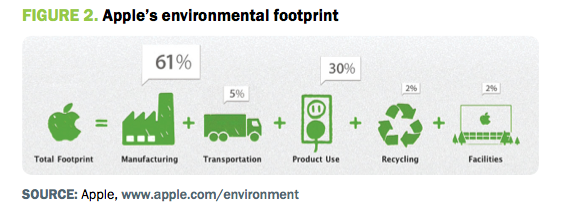

According to apple "We believe climate change is real. And that it's a real problem. As a global company that makes some of the most popular products in the world, we know we use a lot of energy and material, which in turn generates greenhouse gas emissions that contribute to climate change. That's the part of the problem we can help solve." apple goes on to say that all of it's products go beyond EnergyStar's strict standards. Apple states that they strive to create products that are the best in both ways. They want to create products that are powerful and easy to use, but that also do not harm the environment. Apple is also trying to get rid of harmful toxins that are produced when creating their products. Apple leads the industry in reducing or eliminating harmful toxins when they create their products. Apple is also looking for more ways to conserve the resources they all share. They are also trying to recycle more and they have come up with ways to reduce the environmental impact.
